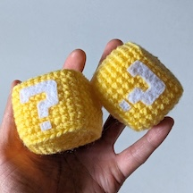
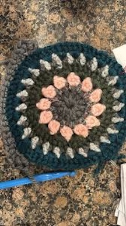
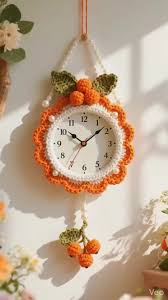

Although patterns can help you come up with ideas and guide you through a project that you do not know how to make, it is really helpful to fully learn all of the mechanics to make your own design. Often as crocheters gain experience, they transition from following patterns to creating thier own, particulary for simpler items like scarves, hats, and beanies. Additionally, many long-time crocheters work freehanding for projects where they already know the construction method.

Most crocheters freehand to avoid the restrictions that a pattern may provide. They also freehand because it allows them to fully express themselves with what they are making, rather than following how other people want you to make a project. Also with clothing, every person is different expecially with sizing. Freehanding is a great way to get your perfect fit. Counting stitches is also, in my opinion, boring and time consuming especially when patterns are really demanding of perfection with stitches. Freehanding also helps crocheters understand construction, which makes designing easier over time. It is also pretty expensive and consumes space to constantly buy books, magazines, and pattern kits.

Crocheters usually do freehand by learning each of the stitches and certain patterns that make a certain shape. They often start by teaking existing patterns using trial and error, and then move onto making (and maybe even selling) their own original patterns. Crocheters may go therouhg many different prototypes before they think they perfected a project. Measurements and math are commonly required especially with clothes. A general understanding of stitches and yarn as well as their size is also extremely helpful when making your own freehanded projects.

When crocheters usually start crocheting is around the 1-2 year mark and they also start with simple shapes such as scarves, beanines, headbands, granny square bags, and dishclothes.
Since I started out with simple square shapes, and then moved onto amigurumi kits. I have not done too much with freehand, but am working towards it and hope to be more confident with crocheting in the summer (my one year mark). I hope your crocheting journey is fun and filled with learning and projects that you keep forever.